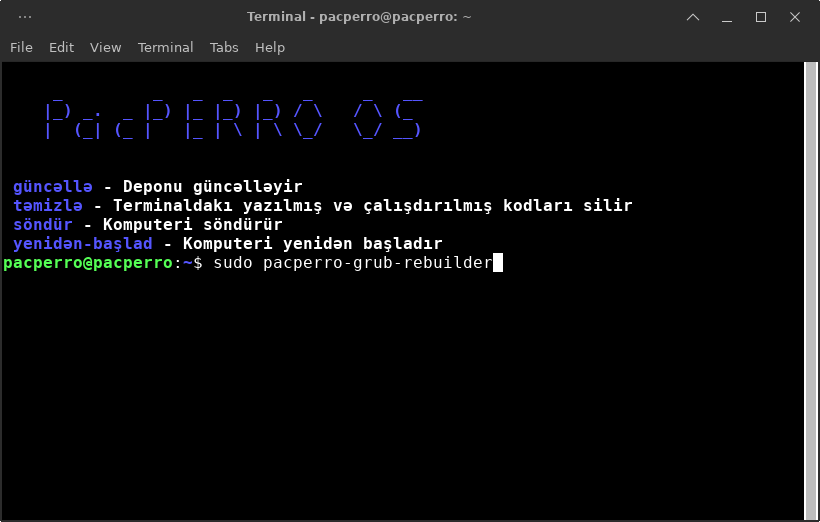
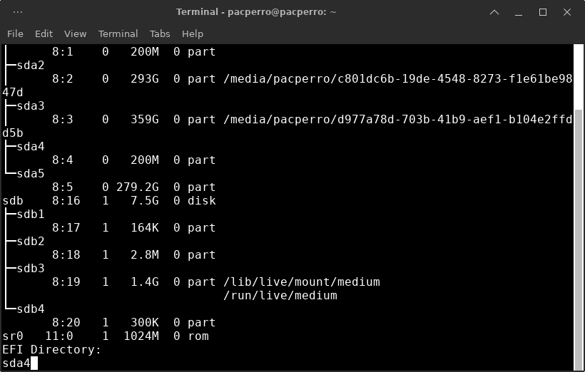
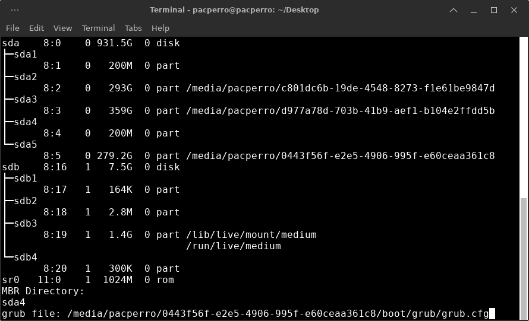

Sistemi quraşdırdıqdan sonra grub necə bərpa edilir ?
Əməliyyat sistemini quraşdırdıqdan sonra əgər komputeriniz UEFI biosdursa o zaman sisteminiz açılmaya bilər. Bu problemin həlli üçün pacperro-grub-rebuilder'dən istifadə edərək quraşdırılan grub'u yenidən bərpa edə bilərsiniz
(Bu prosesləri sistemi quraşdırdıqdan sonra komputeri söndürmədən yəni sisteminiz usb üzərindən çalışan zaman həyata keçirməlisiniz)
Əgər əməliyyat sistemində pacperro-grub-rebuilder yoxdursa, bu kodları icra edin: `sudo azp install pacperro-grub-rebuilder`
İlk öncə terminalı açın və `sudo pacperro-grub-rebuilder` yazın
Daha sonra isə gələn ekranda sistemi quraşdırdığınız zaman seçdiyiniz /boot/efi bölümünün sda'sını daxil edin. (Məsələn: sda2)
(Əgər sistemi diskləri ayırmadan bütün diskə quraşdırmısınızsa o zaman ekranda 200M önündəki sda(X)'i seçin)
Daha sonra isə proqram sizdən 'grub.cfg' faylını istəyəcəkdir. Faylı, sistemi quraşdırdığınız diskin içinə daxil olaraq oradan /boot/grub içərisindən konumunu kopyalayıb proqrama daxil edin.
(Proqram komputerinizi avtomatik yenidən başladacaq və quraşdırdığınız PacPERRO açılacaqdır)